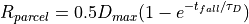
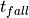
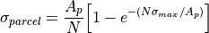
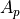
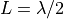
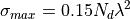
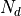

WSF_CHAFF_PARCEL¶
- chaff_parcel WSF_CHAFF_PARCEL¶
chaff_parcel <name> WSF_CHAFF_PARCEL # Geometric inputs bloom_diameter ... expansion_time_constant | bloom_time_constant ... # Kinematic inputs terminal_velocity ... deceleration_rate ... # Lifetime and debugging inputs expiration_time ... debug ... # Signal return (RCS) inputs RCS Related Commands end_chaff_parcel
Overview¶
WSF_CHAFF_PARCEL represents a chaff parcel or bundle dispensed from a system of ejectors composing a WSF_CHAFF_WEAPON. They are modeled as spheres, whose mean radial size is computed as an exponential growth according to the bloom equation:

where is the bloom_diameter,  is time since the parcel was ejected, and is the expansion_time_constant.
A group of one or more parcels dropped with a call to script method WsfChaffWeapon.DropChaffCloud together form a chaff cloud. When illuminated by RF energy, each parcel produces a return signal with a radar cross section defined by:

where  is the bistatic presented area of the cloud,  is the number of parcels in the cloud, and
is the maximum theoretical RCS of the dispersed parcel when its dipoles are widely spaced (i.e., no shielding effects).
is the number of parcels in the cloud, and
is the maximum theoretical RCS of the dispersed parcel when its dipoles are widely spaced (i.e., no shielding effects).
The bistatic presented area of the cloud accounts for parcel blooming and aspect angle dependency. It is the average of the areas presented to the transmitter and receiver, each of which uses aspect angle to compute a weighted RMS value of the cross-sectional areas of the cloud viewed from the front and broad-side.
can be a function of frequency and specified with the frequency_maximum_rcs_table command. If this table is not specified, is computed, assuming spot chaff with half-wave dipoles (all dipoles are cut to the same length ), as follows:

where  is the number of chaff dipoles specified by the number_dipoles command, and  is the wavelength
of the radar. (Ref: Schleher, Electronic Warfare in the Information Age)
is the wavelength
of the radar. (Ref: Schleher, Electronic Warfare in the Information Age)
Note
Chaff parcels are removed from the simulation when they hit the ground, or have been falling for a maximum amount of time specified by expiration_time, whichever comes first.
Commands¶
- bloom_diameter <length-value>¶
Specifies the diameter to which the parcel blooms asymptotically, as time goes to infinity.
Default: 10.0 meters
- expansion_time_constant <time-value>¶
- bloom_time_constant <time-value>¶
Specifies the expansion time constant () in the bloom equation above. The smaller the value, the faster the parcel approaches its bloom_diameter.
Default: 0.75 sec
- terminal_velocity <speed-value>¶
Free fall velocity of the parcel. Parcels are assumed to reach terminal velocity instantaneously upon ejection.
Default: 1.0 m/s
- deceleration_rate <acceleration-value>¶
The rate at which the parcel decelerates upon ejection. This should specify a positive value, giving the magnitude of the acceleration vector that is aligned opposite the initial velocity vector.
Default: 100.0 m/s^2
- expiration_time <time-value>¶
The time at which the parcel will be removed from the simulation, after ejection, unless it hits the ground first.
Default: 60.0 sec
- debug <boolean-value>¶
If true, will print debugging information about parcel status to the console.
Default: false